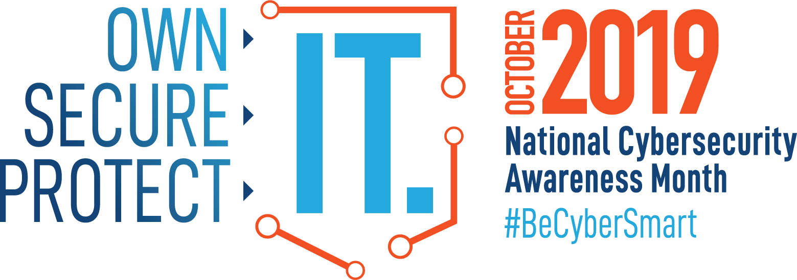

13.1.1 Amenaza, vulnerabilidad y riesgo
Estamos bajo ataque y los atacantes quieren tener acceso a nuestros activos. Los activos son cualquier elemento de valor para una organización, tales como datos y cualquier tipo de propiedad intelectual, servidores, computadoras, teléfonos inteligentes, tabletas y más.
Para entender mejor cualquier debate sobre seguridad de la red, es importante conocer los siguientes términos:
| Término | Explicación |
|---|---|
| Amenaza | El peligro potencial de un recurso, como los datos o la propia red. |
| Vulnerabilidad | Una debilidad en un sistema o en su diseño que podría ser aprovechada por una amenaza. |
| Superficie de ataque | Una superficie de ataque es la suma total de las vulnerabilidades presentes en un determinado sistema las cuales son accesibles para un atacante. La superficie de ataque es la suma de los diferentes puntos donde un atacante podría entrar en un sistema y donde podría extraer datos del sistema. Por ejemplo, su sistema operativo y navegador web podrían ambos necesitar parches de seguridad. Cada uno de ellos es vulnerable a los ataques y están expuestos en la red o en Internet. Juntos, ellos crean una superficie de ataque que un atacante podría aprovechar. |
| Exploits | El mecanismo que se utiliza para aprovechar una vulnerabilidad y comprometer un activo. Los ataques (exploits) pueden ser locales o remotos. Un ataque remoto (exploit) es uno que tiene lugar en la red sin acceso previo al sistema objetivo. El atacante no necesita una cuenta en el sistema final para aprovechar la vulnerabilidad. En un ataque local, el atacante tiene algún tipo de acceso de usuario o administrador al sistema final. Un ataque local no significa, necesariamente, que el atacante tenga acceso físico al sistema final. |
| Riesgo | La probabilidad de que una amenaza específica aproveche una vulnerabilidad particular y provoque un resultado indeseable como consecuencia. |
La gestión de riesgos es el proceso que equilibra los costos operacionales de proporcionar medidas de protección con los beneficios que brinda la protección de los activos. Existen cuatro maneras comunes de gestionar el riesgo, como se muestran en la siguiente la tabla:
| Estrategia de gestión de riesgos | Explicación |
|---|---|
| Aceptación de riesgos | Esto sucede cuando el costo de las opciones de gestión del riesgo sobrepasa el costo del riesgo mismo. El riesgo es aceptado (o sea, es ignorado) y no se toma ninguna medida. |
| Evasión de riesgos | Esto significa evitar cualquier exposición al riesgo eliminando la actividad o el dispositivo que presenta el riesgo. Al eliminar una actividad para evitar riesgos, también se pierden los beneficios posibles de la actividad. |
| Reducción de riesgos | Esto reduce la exposición al riesgo o reduce el impacto del riesgo mediante la adopción de medidas para disminuir el riesgo. Es la estrategia de mitigación de riesgos más comúnmente utilizada. Esta estrategia requiere una evaluación cuidadosa de los costos de las pérdidas, la estrategia de mitigación y los beneficios obtenidos de la operación o actividad en riesgo. |
| Transferencia de riesgos | Algunos o todos los riesgos son transferidos a un tercero que acepte hacerse cargo, como una compañia de seguros. |
Otros términos comúnmente utilizados en la seguridad de la red son los siguientes:
Nota: Un ataque local requiere el acceso interno a la red, por ejemplo, un usuario con una cuenta en la red. Un ataque remoto no requiere una cuenta en la red para aprovechar la vulnerabilidad.
13.1.2 Hacker vs Atacante
Como sabemos, “hacker” es un término comumente usado para describir a un atacante. Sin embargo, el término "hacker" tiene una variedad de significados, como los siguientes:

Para bien o mal, el hacking es un aspecto importante de la seguridad de la red. En este curso, el término “atacante” se utiliza cuando se hace referencia a aquellos individuos o grupos que podrían clasificarse como hackers de sombrero gris o negro.
13.1.3 Evolución de los atacantes
El hacking comenzó en los sesenta con el “phone freaking” o “phreaking”, actividades que hacen referencia al uso de diversas audio frecuencias para manipular los sistemas telefónicos. En aquel momento, los sistemas telefónicos utilizaban varios tonos (o la marcación por tonos) para indicar distintas funciones. Los primeros atacantes se dieron cuenta de que, imitando un tono con un silbato, podían sabotear los sistemas telefónicos y hacer llamadas de larga distancia gratis.
A mediados de los ochenta, se usaban módems de acceso telefónico para conectar las computadoras a las redes. Los atacantes desarrollaron programas de “war dialing” que marcaban cada número de teléfono en un área determinada en busca de computadoras, sistemas de tablón de aununcios y máquinas de fax. Cuando se encontraba un número de teléfono, se utilizaban programas de descifrado de contraseñas para obtener acceso. Desde entonces, los perfiles generales de los atacantes y sus motivos han cambiado un poco.
Existen muchos tipos diferentes de atacantes.
script kiddies
El término “script kiddies” surgió en los noventa y se refiere a los atacantes adolescentes o inexpertos que ejecutan scripts, herramientas y exploits existentes para ocasionar daño, generalmente sin buscar obtener ganancias.
Vulnerability brokers
Por lo general, los "Vulnerability brokers" son hackers de sombrero gris que intentan descubrir los ataques e informarlos a los proveedores, a veces a cambio de premios o recompensas.
Hacktivistas
Es un término que hace referencia a los hackers de sombrero gris que se reúnen y protestan contra diferentes ideas políticas y sociales. Los hacktivistas protestan en público contra las organizaciones o los gobiernos mediante la publicación de artículos, vídeos, la filtración de información confidencial y la ejecución de ataques de denegación de servicios distribuida (DDoS, siglas en inglés)
Ciberdelincuentes
El término Ciberdelincuente es utilizado para los hackers de sombrero negro que son independientes o trabajan para grandes organizaciones de delito cibernético. Cada año, los delincuentes cibernéticos son responsables de robar miles de millones de dólares de consumidores y empresas.
Patrocinados por el estado
Los hackers patrocinados por el estado son atacantes que roban secretos de gobierno, recogen inteligencia y sabotean las redes de gobiernos extranjeros, grupos terroristas y corporaciones. La mayoría de los países del mundo participan en algún tipo de hacking patrocinado por el estado. Según la perspectiva de cada persona, se trata de hackers de sombrero blanco o de sombrero negro.13.1.4 Ciberdelincuentes
Los ciberdelincuentes son atacantes cuya motivación es hacer dinero como sea. Aunque algunas veces, los ciberdelincuentes trabajan de manera independiente, lo más común es que reciban financiación y patrocinio de organizaciones criminales. Se calcula que, en todo el mundo, los ciberdelincuentes roban miles de millones de dólares de los consumidores y las empresas cada año.
Los ciberdelincuentes hacen sus negocios en un mercado ilegal donde compran, venden e intercambian exploits y herramientas. Ellos también compran y venden información personal y de propiedad intelectual que roban de sus víctimas. Los ciberdelincuentes apuntan a pequeñas empresas y consumidores, así como a grandes empresas e industrias.
13.1.5 Tareas de ciberseguridad
Los atacantes no discriminan. Ellos localizan y atacan terminales vulnerables de usuarios domésticos de pequeñas y medianas empresas, al igual que de organizaciones públicas y privadas importantes.
Para hacer más seguro el Internet y las redes, todos debemos desarrollar un buen nivel de conocimiento sobre ciberseguridad. La ciberseguridad es una responsabilidad compartida que deben practicar todos los usuarios. Por ejemplo, debemos informar los casos de ciberdelincuencia a las autoridades competentes, ser conscientes de posibles amenazas en la web y en el correo electrónico, y proteger la información importante contra los robos.
Las organizaciones deben tomar medidas y proteger sus activos, usuarios y clientes. Deben desarrollar e implementar tareas de ciberseguridad, como las que aparecen en la figura.

13.1.6 Indicadores de una amenaza cibernética
Muchos ataques de red pueden ser prevenidos si se comparte la información acerca de los indicadores de compromiso (IOC). Cada ataque tiene atributos únicos que lo identifican. Los indicadores de compromiso(IOC, por sus siglas en inglés) son la evidencia de que se ha producido un ataque. Los IOC pueden ser características que identifican a los archivos de malware, direcciones IP de servidores que se utilizan en ataques, nombres de archivos y cambios característicos realizados en el software del sistema final, entre otros. Los IOC ayudan al personal de ciberseguridad a identificar lo que ha ocurrido en un ataque y a desarrollar defensas contra el ataque. En la figura se muestra un resumen del IOC para un fragmento de malware.
Malware File - "studiox-link-standalone-v20.03.8-stable.exe"
sha256 6a6c28f5666b12beecd56a3d1d517e409b5d6866c03f9be44ddd9efffa90f1e0
sha1 eb019ad1c73ee69195c3fc84ebf44e95c147bef8
md5 3a104b73bb96dfed288097e9dc0a11a8
DNS requests
domain log.studiox.link
domain my.studiox.link
domain _sips._tcp.studiox.link
domain sip.studiox.link
Connections
ip 198.51.100.248
ip 203.0.113.82
Por ejemplo, un usuario recibe un correo electrónico en el que lee que ha sido el ganador de un gran premio. Si hace clic en el enlace, el correo electrónico termina siendo un ataque. El IOC puede incluir el hecho de que el usuario no interactuó con el correo, la dirección IP del remitente, la línea del asunto del correo electrónico, el enlace incluido para hacer click o un archivo adjunto para descargar, entre otros.
Los indicadores de ataque (IOA, por sus siglas en inglés) se centran más en la motivación detrás de un ataque y en los medios potenciales por los que los atacantes han comprometido o comprometerán las vulnerabilidades para acceder a los activos. Los IOA se interesan por las estrategias que utilizan los atacantes. Por esta razón, en lugar de informar la respuesta a una sola amenaza, los IOA pueden ayudar a generar un enfoque de seguridad proactivo. Esto se debe a que las estrategias se pueden reutilizar en múltiples contextos y múltiples ataques. Por lo tanto, defenderse contra una estrategia puede evitar futuros ataques que utilicen la misma estrategia o estrategia similar.
13.1.7 Uso compartido de amenazas y creación de conciencia sobre ciberseguridad
En la actualidad, los gobiernos están promoviendo activamente la ciberseguridad. Por ejemplo, la Agencia de Seguridad e Infraestructura de Ciberseguridad de los Estados Unidos (CISA, siglas en inglés) está liderando los esfuerzos para automatizar el intercambio de información de ciberseguridad con organizaciones públicas y privadas sin costo alguno. CISA utiliza un sistema llamado Intercambio Automatizado de Indicadores (AIS, siglas en inglés). AIS permite el intercambio de indicadores de ataque entre el gobierno de los Estados Unidos y el sector privado tan pronto como las amenazas son verificadas. CISA ofrece muchos recursos que ayudan a limitar el tamaño de la superficie de ataque de Los Estados Unidos.
La CISA y la Alianza Nacional de Ciberseguridad (NCSA) promueven la ciberseguridad para todos los usuarios. Por ejemplo, tienen una campaña anual en octubre que se denomina “Mes de conciencia sobre la ciberseguridad nacional (NCASM, siglas en inglés)”. Esta campaña fue desarrollada para promover y crear conciencia sobre la ciberseguridad.
El tema de la NCASM para 2019 fue "Tú propio TI. Seguridad de TI. Protección de TI." Esta campaña animó a todos los ciudadanos a ser más seguros y personalmente responsables en el uso de las buenas prácticas de seguridad en línea. La campaña proporciona material sobre una amplia variedad de temas de seguridad, entre ellos:

La Agencia Europea de Seguridad de las Redes y de la Información (ENISA, siglas en inglés) ofrece asesoramiento y soluciones para los desafíos de ciberseguridad de los Estados miembros de la Unión Europea. ENISA cumple un papel en Europa similar al papel de CISA en los Estados Unidos.